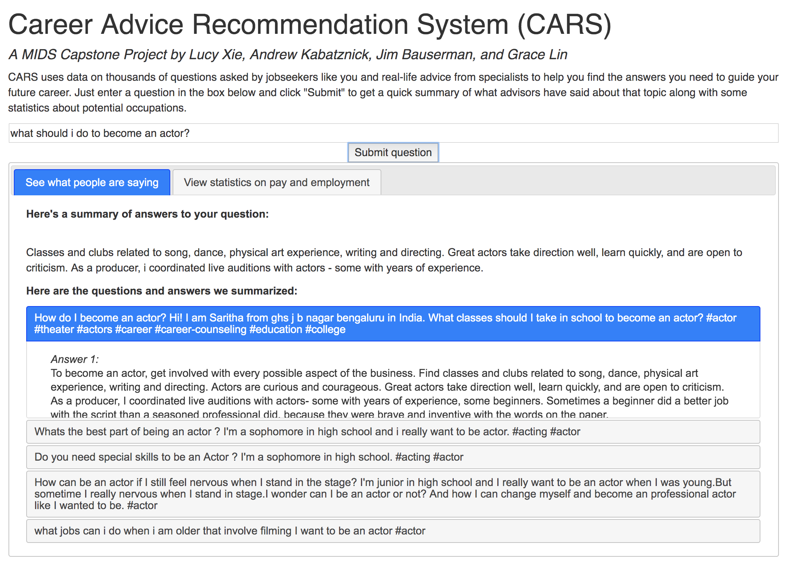
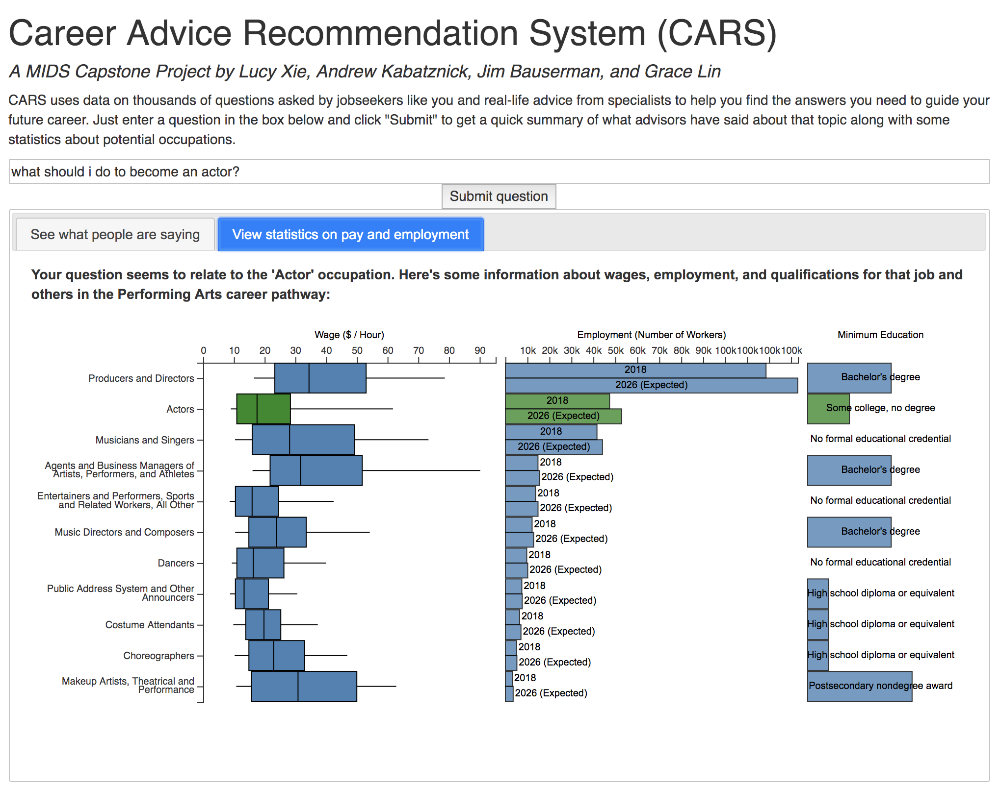

CARS uses a corpus of real-world career-related questions and answers to provide advice to jobseekers based on their queries.
There are a huge number of websites offering information about job search. These range from job boards that provide listings like Indeed, to sites hosting discussion and reviews like CareerVillage and Glassdoor, to sites with data on current labor market conditions like the Bureau of Labor Statistics site. While this wealth of information is very valuable, it can also be overwhelming for jobseekers.
We want to bring together useful information for jobseekers, primarily by synthesizing advice relevant to their career goals. We used a dataset of career-related questions and answers from CareerVillage.com supplemented with scraped threads from reddit.com/r/careerguidance. Given these data sources, we built a recommendation model to select the set of questions in our corpus that are most similar to a user's query. We then feed the results of this model into a summarization model that condenses the answers to those questions into a digestible form for users
Here's what a user sees after submitting a query:
We also infer which Bureau of Labor Statistics occupations are most relevant to a user's query, and display a small dashboard of statistics about that and related occupations.
